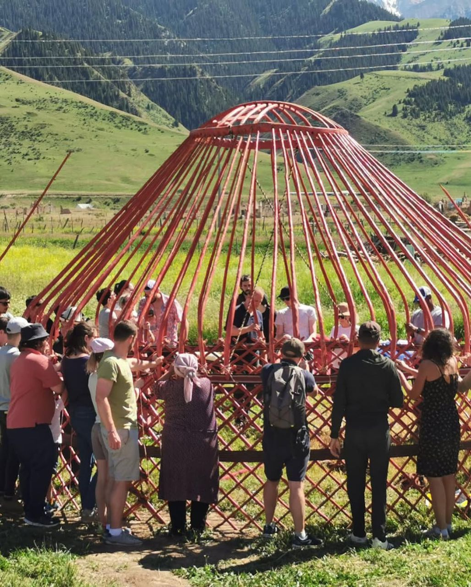
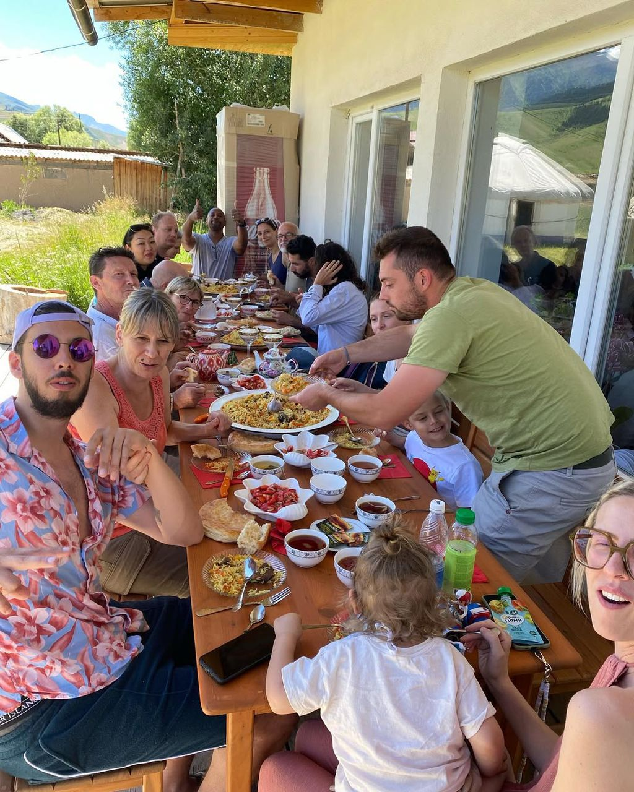
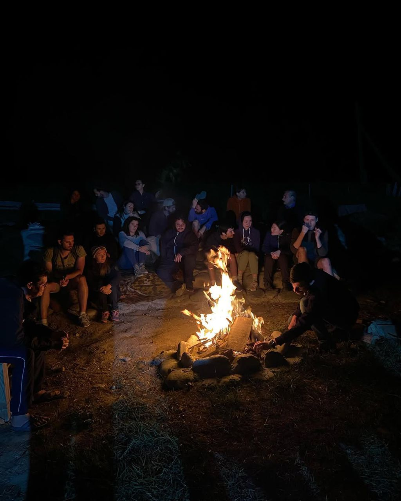

Altay Villaj Hotel — история природы, простоты и настоящего уюта
Наш отель находится в красивом селе Таш-Башат, в Калининской долине, у подножия гор. Это место, где чистый воздух, тишина, натуральные материалы и красивые виды создают особенную атмосферу отдыха.
Живая атмосфера места
Моменты, которые передают настроение отдыха, природы и теплой атмосферы Altay Villaj Hotel.



История создания
Как появилась идея Altay Villaj Hotel
Начало проекта
Житель села Таш-Башат Улан Үсөйүн в 2019 году начал строительство Altay Villaj Hotel с идеей создать спокойное место отдыха в гармонии с природой.
Простая и натуральная архитектура
Отель строился в простом, но особенном стиле: с использованием чёрной штукатурки, самана и натуральных материалов, чтобы сохранить тепло, естественность и экологичность.
Новая жизнь старых построек
Некоторые нынешние здания отеля до этого были хозяйственными постройками — коровником и овчарней. Со временем они получили новую жизнь и превратились в уютное пространство для гостей.
Видео от владельца
История создания Altay Villaj Hotel
Не просто отель, а место с характером
Altay Villaj Hotel отличается не роскошью, а настоящей атмосферой. Здесь важны не только комнаты, но и само ощущение места: естественные формы, экологически чистые материалы, сельская тишина и спокойный ритм жизни.
Именно эта простота делает отдых особенным. Гости чувствуют здесь не искусственный гостиничный стиль, а живую связь с селом, природой и настоящим уютом.
- Экологически чистые материалы
- История зданий и натуральный стиль
- Тишина и отдых без городской суеты
- Простая, теплая и живая атмосфера
Что делает нас особенными
Несколько вещей, которые особенно запоминаются гостям
Чистый воздух
Село находится у подножия гор, поэтому здесь особенно свежий воздух и спокойная атмосфера.
Красивые балконы и виды
Балконы отеля позволяют наслаждаться природой, рассветом, воздухом и видом на окружающее пространство.
Экологичный стиль
Натуральные материалы и простая архитектура создают ощущение уюта и экологической чистоты.
Домашняя еда
Одной из особенностей места является еда, которая дополняет отдых простотой, теплом и вкусом.
О селе Таш-Башат
Спокойное место в Калининской долине у подножия гор
Таш-Башат — красивое и спокойное село, расположенное в Калининской долине, у подножия гор. Это место привлекает открытым пространством, естественной тишиной и ощущением близости к природе.
Здесь особенно чувствуется сельская гармония: чистый воздух, простая жизнь, красивые виды и уютная атмосфера. Именно поэтому отдых в таком месте ощущается глубже и спокойнее, чем в обычном городе.
Почувствуйте атмосферу Altay Villaj Hotel
Природа, экологичный стиль, балконы с красивым видом и спокойствие Таш-Башата ждут вас.
Перейти к форме бронирования